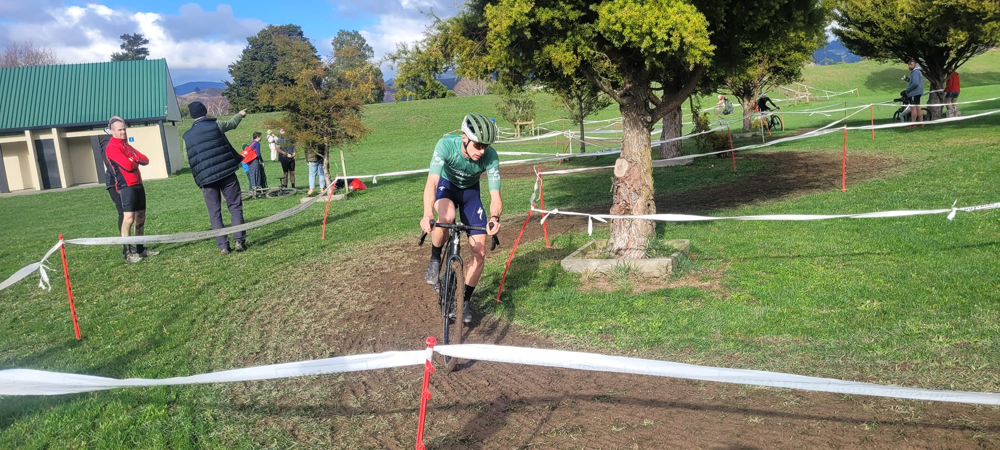

About

Seismic Cycle Racing is a pun. Seismic cycles refer to the cyclical nature of
stress build-up and release on faults in earthquakes. In earthquake science we are
always racing to understand the next earthquake before it happens.
If you want to know more about seismic cycles, consider taking some Earth Science
at Victoria University of Wellington, NZ where Calum teaches.
This isn't a real racing team, just a bit of fun.
Racing
To read more about what Calum has been up to with his racing, check out the blog.

The Jersey
The Seismic Cycle Racing kit is designed around seismograms from two key places in Calum's career.
The logo is sat on a seismogram from a small (M3) earthquake near the Alpine Fault recorded at Milford Sound.
The logo is also sheared along a dextral (right-lateral) "fault": the Alpine Fault is what drew Calum to New Zealand
(e.g. Chamberlain et al., 2014) and is a dextral-reverse plate boundary fault. We
are currently racing to beat the seismic cycle on the Alpine Fault and try and understand as much as we can about it before the next large earthquake.
The Alpine Fault has a high probability of generating a large earthquake in the next few decades (Howarth et al., 2021).
The seismogram on the back of the jersey is from the 2016 M7.8 Kaikōura earthquake recorded at Wellington.
This earthquake was one of the most complex earthquakes in recorded history, and Calum spent a long time working on trying to understand how the earthquake worked
(e.g. Chamberlain et al., 2021). It also woke Calum up and after about 30 seconds
of shaking he went to go and check on his bikes assuming that the shaking was over, only to be pulled back to the doorway by his wife.
The final element of the jersey is the outline of the Red Hills on the chest. This outline is adapted from the banner photo for this site. The hills surround
the southern Alpine Fault, where Calum and Emily spend a long time digging holes and flying around in helicopters a few years back.
Contact
If you want to get in touch with Calum, and particularly if you are interested in opportunities to sponsor the Seismic Cycle Racing team, click the links below.